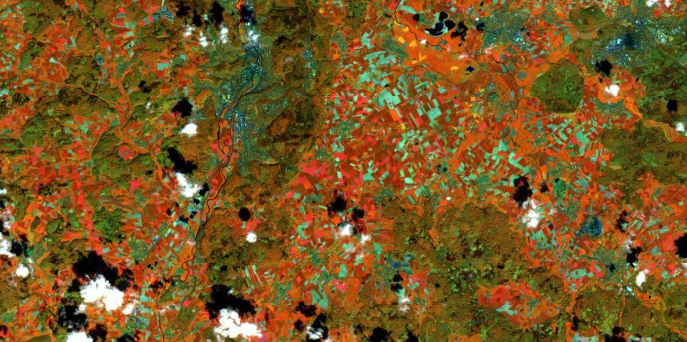

News von actinia

FOSSGIS 2022 Marburg
Vol. 1
Zuvor über Actinia

Neue Features
Zwischenergebnisse speichern
Wiederaufnahme des Jobs
Integration von tgis in Mapset Merge
Unterstützung für STRDS-Export
Lokaler GeoTIFF-Import
Verbessern der Versionsausgabe
Überwachung der Mapset-Größe einer Ressource
...

[3.0.0] - 2022-01-13
[2.0.0] - 2021-10-13
[1.0.0] - 2021-06-02
Happy Codesprint release :)
https://github.com/mundialis/actinia_core/projects/1
### Added
* Get all mapsets locks (#200)
* gource script for code development visualization (#219)
* Local GeoTIFF import (#216)
### Changed
* **rename master to main (#194)**
* Part of **issue #190**
* Move common folder one level up + use absolute imports (#199)
* Rename resources folder to rest + use absolute imports (#207)
* Create models folder (#208)
* move common to subfolder core (#215)
* update folders in scripts (#220)
* Move modules used by plugins (#221)
* Update plugin versions (#222)
* Part of **issue #189**
* Splitup ephemeral processing (#196)
* splitup methods in aws_sentinel_interface (#205)
* Splitup common folder (part 1) (#209)
* change GHA on push and pr (#217)
### Fixed
* fix docker build (#187)
* make better use of cache for test dockerimage (#198)
* Fix docker test permissions (#201)
* lint (#203)
### Documentation
* **Conversion of Sphinx based tutorial to markdown/mkdocs (#204)**
* Documentation update (#210)
* update docker readme (#218)
Verwandt
openeo-grassgis-driver
Selbst-beschreibung
Template Management
actinia in Projekten
FTTHLOOSEHERMOSA
#### Zwischenergebnisse speichern (Save interim results) (#137) [0.99.21]
* Nach jedem erfolgreichen Schritt wird das temporäre Mapset gespeichert
* Nach erfolgreichen persistenten Prozessen wird es entfernt
* Kann gelöscht werden per HTTP DELETE `/api/v3/resource_storage`
---
[MISC]
...
save_interim_results = True
#### Wiederaufnahme des Jobs (Job resumption) (#143) [0.99.28]
* Wiederaufname eines nicht beendeten Jobs
* Vorher Neustart des gesamten Jobs erforderlich
* Benötigt `save_interim_results = True`
---
__Fortsetzung eines Jobs per HTTP PUT__ `resources/{user_id}/{resource_id}`
__Neueste Iteration abrufen per HTTP GET__ `resources/{user_id}/{resource_id}` with `resource_id-` prefix
__Alle Iterationen zurückgeben per HTTP GET__ `resources/{user_id}/{resource_id}`
__Eine bestimmte Iteration zurückgeben per HTTP GET__ `resources/{user_id}/{resource_id}/{iteration}`
#### Unterstützung für STRDS-Export (Add support for STRDS export) (#236) [1.1.0]
* STRDS Export für flüchtige Prozessierung hinzugefügt
* `t.rast.export` wird verwendet
* Schreibt separate GeoTIFFs und packt sie
---
{
"list": [
{...},
{
"id": "save_result",
"module": "exporter",
"outputs": [
{
"export": {
"format": "GTiff",
"type": "strds"
},
"param": "map",
"value": "lst"
}
]
}
],
"version": "1"
}
#### Integration von tgis in Mapset Merge (Integrate tgis in mapset merge) (#233) [1.1.0]
* Nach erfolgreicher persistenter Prozessierung wird das temporäre Mapset zusammengeführt
* Vorher waren STRDS nicht enthalten
* Jetzt ist dies möglich durch Manipulation der tgis sqlite Datenbank
* Wenn das Mapset existiert und eine tgis Datenbank hat, wird es vor der Prozessierung in die temporäre tgis Datenbank kopiert
#### Überwachung der Mapset-Größe einer Ressource
#### (Monitoring of mapset size of a resource) (#150) [0.99.24]
* Fügt die Mapset-Größe in Bytes zum resource_log hinzu
* Gibt die Mapset-Größen einer Ressource für jeden Schritt zurück und rendert sie
* Gibt die maximale Mapset-Größe einer Ressource zurück
* Gibt die Unterschiede in der Mapset-Größe einer Ressource zurück und rendert sie


---
process_log: [{
executable: "r.mapcalc",
mapset_size: 29946,
parameter: [
"expression=baum=5"
],
return_code: 0,
run_time: 0.15045166015625,
stderr: [
""
],
stdout: ""
}
],
---
---
{
mapset_sizes: [
29946,
29949
],
status: "success"
}
---
---
{
max_mapset_size: 29949,
status: "success"
}
---
#### Verbessern der Versionsausgabe (Enhance version output) (#132) [0.99.18], (#283) [2.2.0], (#252) [3.1.0]
* Detailiertere Ausgabe des `/version` Endpunktes
* Beinhaltet GRASS GIS Version
* Beinhaltet die Versionen der installierten Plugins
* Beinhaltet Python Version
* Beinhaltet api Version, die in #278 aus actinia-core ausgelagert wurden
* Beinhaltet "running_since" und flexible zusätzliche Attribute
---
{
"api_version": "3.0.1",
"grass_version": {
"build_date": "2022-01-19",
"build_off_t_size": "8",
"build_platform": "x86_64-pc-linux-musl",
"date": "2022",
"gdal": "3.1.4",
"geos": "3.8.1",
"libgis_date": "2022-01-19T05:02:20+00:00",
"libgis_revision": "2022-01-19T05:02:20+00:00",
"proj": "7.0.1",
"revision": "d21dd0a",
"sqlite": "3.32.1",
"version": "8.1.dev"
},
"plugin_versions": {
"actinia_metadata_plugin": "1.0.2",
"actinia_module_plugin": "2.2.4",
"actinia_satellite_plugin": "0.0.4",
"actinia_stac_plugin": "0.0.1",
"actinia_statistic_plugin": "0.0.4"
},
"plugins": "actinia_statistic_plugin,actinia_satellite_plugin,actinia_metadata_plugin,actinia_module_plugin,actinia_stac_plugin",
"python_version": "3.8.5 (default, Jul 20 2020, 23:11:29) - [GCC 9.3.0]",
"running_since": "n/a",
"version": "3.0.1"
}
#### Lokaler GeoTIFF-Import (Local GeoTIFF import) (#216) [1.0.0]
* Ermöglicht den Upload von lokalen GeoTIFFs in actinia
* Per HTTP POST `/locations/nc_spm_08/mapsets/test_mapset/raster_layers/myraster`
#### Lokaler Vektor-Import (Add vector upload) (#260) [2.0.0]
* Ermöglicht den Upload von lokalen Vektordaten in actinia
* Per HTTP POST `/locations/nc_spm_08/mapsets/test_mapset/vector_layers/myvector`

Weitere Neuigkeiten, Features, Verbesserungen
helm chart für kubernetes / openshift
STDOUT Logger mit optionalem "colored" oder JSON-Formatter (#47) [0.99.8]
Zitierbarer actinia source code mit DOI (#300) [3.0.1]
Fügt STDOUT als `process_result` hinzu für Endpunkt `locations/{location}}/mapset/{mapset} /processing_async` (#149) [0.99.23]
Alle gesperrten Mapsets anzeigen (#200) [1.0.0]
Auflistung aller verfügbaren Mapsets (#249) [2.0.0]
raster_exporter: COG Support hinzugefügt (#108)[0.99.12]
Erlaube "&" in Parameterwerten für r.mapcalc u.a. (#253) [2.0.0], (#308) [3.1.0]
band_reference und number_of_bands für Image Collections hinzugefügt (GRASS GIS 7.9+) (#70) [0.99.3]/p>
Exporter erweitert (overviews #66, LZW compression #85, COG support #108, default vector GPKG #157)
Wiederholte Versuche des Webhooks (#299) [3.1.0]
actinia-gdi
Aufteilung von actinia-gdi in multiple Plugins [0.99.22]
JSON Output für STDOUT Parser (#239), (#240) [1.2.0]
Qualitätsverbesserungen (Verbesserung der Tests, lint, Security Check - CodeQL, Dev Setup), mehr Sicherheit in der Antwort mit Webhook (#163)
STAC in actinia, actinia-stac-plugin
ace,
exporter,
importer: Auslagerung in separate Repos (#160) [0.99.26]
Changelog eingeführt (#183) [0.99.28]
Dockerfile für Alpine umgeschrieben (#55) [0.99.3]
Verbesserte GHA
- Docker build und Push (#165) [1.1.0]
- Automatisierte Tests hinzugefügt (#166) [0.99.27]
#### openEO - openeo-grassgis-driver
Weiterentwicklung, um die gesamte GRASS GIS Funktionalität per openEO API verfügbar zu machen

#### actinia-module-plugin Selbstbeschreibung
* Listet alle GRASS GIS und actinia Module per HTTP GET `/modules`
* Filter sind verfügbar:
* family - Typ des GRASS GIS Moduls ["d", "db", "g", "i", "m", "ps", "r", "r3", "t", "test", "v"]
* tag - Filter für Kategorien
* category - Noch ein filter für Kategorien
* record=full - Zeigt die vollständige Beschreibung für die Liste an (gecached)
* Bestimmtes Modul über ID anfragen, z.B. HTTP GET `/modules/r.slope.aspect`
---
{
"id": "r.slope.aspect",
"categories": [
"aspect",
"curvature",
"grass-module",
"raster",
"slope",
"terrain"
],
"parameters": [
{
"description": "Name of input elevation raster map. ",
"name": "elevation",
"optional": false,
"schema": {
"subtype": "cell",
"type": "string"
}
},
{
"default": "degrees",
"description": "Format for reporting the slope. ",
"name": "format",
"optional": true,
"schema": {
"enum": [
"degrees",
"percent"
],
"type": "string"
}
},
{...}
],
"returns": [
{
"description": "Name for output slope raster map. ",
"name": "slope",
"optional": true,
"schema": {
"subtype": "cell",
"type": "string"
}
},
{...}
]
}
actinia-module-plugin Template Management - Templates
Beispiel Prozesskette
{
"list": [
{
"module": "g.region",
"id": "g.region_1",
"inputs": [
{
"param": "raster",
"value": "elevation"
},
{
"param": "res",
"value": "10"
}
],
"flags": "p"
},
{
"module": "r.slope.aspect",
"id": "r.slope.aspect_1",
"inputs": [
{
"param": "elevation",
"value": "elevation"
},
{
"param": "format",
"value": "degrees"
},
{
"param": "precision",
"value": "FCELL"
},
{
"param": "zscale",
"value": "1.0"
}
],
"outputs": [
{
"export": {
"format": "GTiff",
"type": "raster"
},
"param": "slope",
"value": "elevation_myslope"
}
],
"flags": "a"
}
],
"version": "1"
}
Prozessketten-Template
{
"id": "elevation_demo",
"description": "Demo of pc templates",
"template": {
"list": [
{
"flags": "p",
"id": "g.region_1",
"inputs": [{
"param": "raster",
"value": "{{ elevation_map }}"
},
{
"param": "res",
"value": "10"
}
],
"module": "g.region"
}, {
"module": "r.slope.aspect",
"id": "r.slope.aspect_1",
"inputs": [
{
"param": "elevation",
"value": "{{ elevation_map }}"
},
{
"param": "format",
"value": "degrees"
},
{
"param": "precision",
"value": "FCELL"
},
{
"param": "zscale",
"value": "1.0"
}
],
"outputs": [
{
"export": {
"format": "GTiff",
"type": "raster"
},
"param": "slope",
"value": "{{ elevation_map }}_myslope"
}
],
"flags": "a"
}
],
"version": "1"
}
}
#### actinia-module-plugin Template Management - CRUD
Man kann jetzt Templates erstellen, lesen, aktualisieren und löschen via HTTP REST API
curl -u XXX -X POST -H "Content-Type: application/json" -d "${JSON}" https://actinia-dev.mundialis.de/api/v3/actinia_templates
curl -u XXX -X GET https://actinia-dev.mundialis.de/api/v3/actinia_templates/elevation_demo
curl -u XXX -X PUT -H "Content-Type: application/json" -d "${JSON}" https://actinia-dev.mundialis.de/api/v3/actinia_templates/elevation_demo
curl -u XXX -X DELETE https://actinia-dev.mundialis.de/api/v3/actinia_templates/elevation_demo
#### Neu erstellte Templates sind dann auch in den Modulen verfügbar:
curl -u XXX -X GET "https://actinia-dev.mundialis.de/api/v3/modules/elevation_demo"
{
"categories": [
"actinia-module",
"user-template"
],
"description": "Demo of pc templates",
"id": "elevation_demo",
"parameters": [
{
"description": "Set region to match raster map(s). [generated from g.region_raster]",
"name": "elevation_map",
"optional": true,
"schema": {
"subtype": "cell",
"type": "array"
}
}
],
"returns": []
}
#### actinia-module-plugin Template Management - Prozessierung
Jetzt können wir unser Template in einem Prozess ausprobieren! - Wir verwenden diese JSON-Datei als HTTP-Postbody:
{
"list": [
{
"module": "elevation_demo",
"id": "elevation_demo_1",
"inputs": [
{
"param": "elevation_map",
"value": "elevation"
}
]
}
],
"version": "1"
}
BASE_URL="https://actinia-dev.mundialis.de/api/v3/locations/nc_spm_08/mapsets/foss4g_demo"
curl -u XXX -X POST -H "Content-Type: application/json" -d "${JSON}" \
$BASE_URL/processing
curl -u XXX -X GET $BASE_URL/raster_layers/elevation_myslope/render > myslope.tiff

actinia in Projekten
FTTH
- "Fibre to the home"
- Projekt mit Deutsche Telekom
- Entwicklung kundenspezifischer Prozesse (Berechnung von automatisierter Orthophoto Klassifikation und Potentielle Trassen) mit GRASS GIS und actinia
LOOSE
- Technologies for the management of long EO data time series
- Supported by ESA
- Technologieprojekt mit mehreren Teilnehmern
- Prozessierung spezieller Berechnungen mit Sentinel-Daten mit GRASS GIS und actinia über openEO API
STAC
openeo-web-editor
openeo-grassgis-driver
HERMOSA
- Holistic Ecosystem Restoration Monitoring, repOrting, Sharing and mArketplace
- Supported by ESA
- mit terrestris
- Entwicklung kundenspezifischer Prozesse (automatisierte Sentinel-1, Sentinel-2 und VHR-Klassifizierung)
- Verarbeitung wird manuell über Web-Client gestartet
react-geo
SHOGun
GeoServer
Ausblick
Upcoming
- STAC Integration (bereits in Arbeit)
- Benutzerauthentifizierung über Keycloak
- Module thematisch umstrukturieren
- Aufteilung des Codes in Auftragsempfänger und Auftragsausführer
- Automatisierte Paralellisierung
- Auslagerung der kompletten API docs / docker builds in eigentständige Repositories
- ...
Verwandte Links auf GitHub
Vielen Dank!
Fragen?